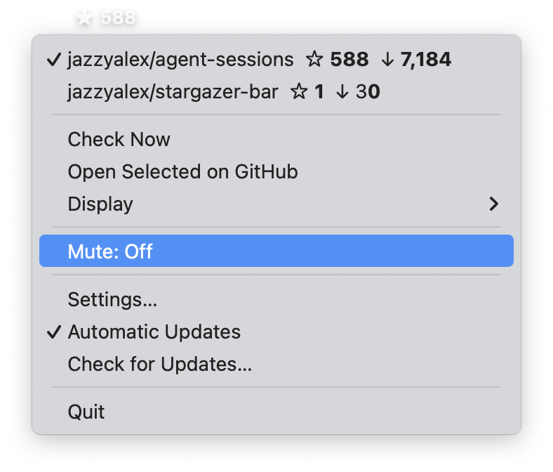
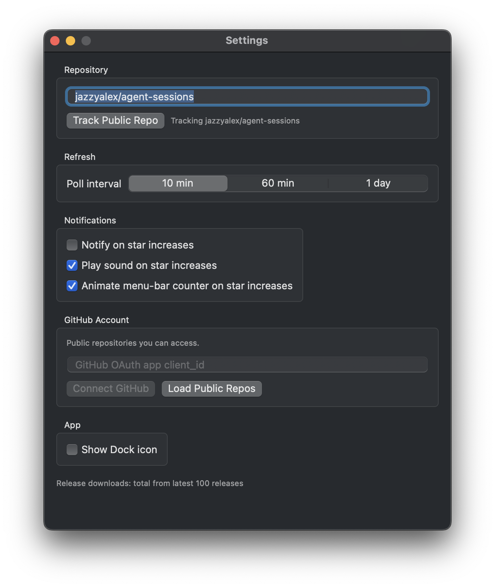

A tiny native macOS app for watching one public GitHub repo's stars and release downloads without keeping GitHub open.

Why it exists
One public repo's star count lives in your menu bar, so you do not need a GitHub tab open after a launch or release.
Release download totals from GitHub's latest releases API page, shown in the same compact dropdown.
Track any public repo without a GitHub account. Sign in only if you want the repository picker.
Sparkle updates are EdDSA-signed, notarized, and enabled by default. Always current.
Privacy
No backend, no telemetry. Settings live in UserDefaults on your Mac. Optional OAuth tokens are stored in Keychain and never leave your machine.

One download. No account needed to get started.